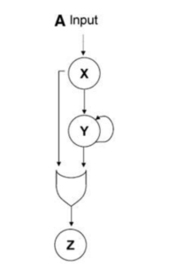

The cellular function of feed-forward loops (FFL) integration by OR gates
The feed-forward loop (FFL) motif is a common gene regulatory network found in many organisms. The simplest form requires three nodes (gene, protein, etc.) and three regulatory interactions.
Typically, a transciption factor X (TF-X) interacts with TF-Y in order to regulate gene Z but TF-X can also interact with the Z promoter to activate gene Z by itself. The former pathway is called the delay/indirect pathway while the latter is known as the direct pathway.
A transcription factor is a protein that binds to DNA at specific target sequences. It can function to make it easier (activator) or harder (repressor) for a gene to be transcribed.

TF-X and TF-Y often integrate at the Z promoter through either an AND gate (X* and Y* are BOTH required) or an OR gate (X* or T* is sufficient).
A promoter is a sequence of DNA ahead/upstream of the gene of interest where transcription factors (among other proteins) can bind to elicit an effect on transcription.
Both are seen in nature but confer VERY distinct properties to a system.
FFLs using an AND gate (AND-FFL) builds a timed delay, where there is a delay in the ON step but no delay in the OFF step.
FFLs using an OR gate (OR-FFL) demonstrates the opposite behaviour. OR-FFL would allow for rapid activation of a process but inactivation would take a bit of time ebcause the system would need to wait for both inputs (X* and Y*) to decrease in order to turn off the output (Z).
The use of AND-FFL networks is often seen in differentiation because it allows the signal to be passed if and only if the input signals are steady and persistent. This prevents differentiation from starting when the cell is not ready.
Differentiation is a process by which a cell becomes a more specific cell type. Multiple signals are necessary for differentiation to proceed in a coordinated manner to create an organism.
On the other hand, I would speculate that OR-FFL networks can be seen in systems that have inputs that fluctuate very rapidly. For example, environmental inputs or transient molecules in a cell that act as a stress input would most likely be involved in an OR-FFL network. Unlike AND-FFL, OR-FFL has no delay in the ON step. This allows the cell to respond rapidly and only stop responding when the stressors are detected to be absent for the duration of the delay.
In a study, E. coli flagellar motor protein assembly was seen to display OR-FFL mechanism (Kalir et al., 2005). The researchers suggested that the inputs were governed by many environmental inputs such as temperature, osmotic stress, carbon starvation, etc., These factors all fluctuate rapidly and the OR-FFL allows E. coli to quickly swim away and only stop swimming when the stress factors are absent for an extended period of time, signifying that the new environment is safe.
Flagella are tail-like structures that allow bacteria to move in it’s environment.
Well that’s it! This network motif is by far not the only one - just one of the simpler ones. There are plenty of others (e.g., NAR, molecular ratchets, oscillators, memory devices, etc). It’s just interesting to see biological systems described as computer parts (i.e., computation). In many ways they are the same, but in many ways they’re vastly more complex and dynamic. It’s fun to fantasize about the billions of brownian input in a cell’s interactome and then to scale up complexity.
Enjoy Reading This Article?
Here are some more articles you might like to read next: